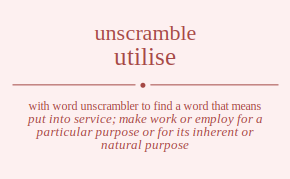

The word found after unscrambling utilise means that put into service; make work or employ for a particular purpose or for its inherent or natural purpose, .

The word found after unscrambling utilise means that put into service; make work or employ for a particular purpose or for its inherent or natural purpose, .
You can also find solutions for different combinations of letters in utilise like utilise utilies utilsie utilsei utileis utilesi utiilse utiiles utiisle utiisel utiiels utiiesl utislie utislei utisile utisiel utiseli utiseil utielis utielsi utieils utieisl utiesli utiesil utliise utliies utlisie utlisei utlieis utliesi utliise utliies utlisie utlisei utlieis utliesi utlsiie utlsiei utlsiie utlsiei utlseii utlseii utleiis utleisi utleiis utleisi utlesii utlesii utiilse utiiles utiisle utiisel utiiels utiiesl utilise utilies utilsie utilsei utileis utilesi utisile utisiel utislie utislei utiseil utiseli utieils utieisl utielis utielsi utiesil utiesli utsilie utsilei utsiile utsiiel utsieli utsieil utsliie utsliei utsliie utsliei utsleii utsleii utsiile utsiiel utsilie utsilei utsieil utsieli utseili utseiil utselii utselii utseiil utseili uteilis uteilsi uteiils uteiisl uteisli uteisil uteliis utelisi uteliis utelisi utelsii utelsii uteiils uteiisl uteilis uteilsi uteisil uteisli utesili utesiil uteslii uteslii utesiil utesili uitlise uitlies uitlsie uitlsei uitleis uitlesi uitilse uitiles uitisle uitisel uitiels uitiesl uitslie uitslei uitsile uitsiel uitseli uitseil uitelis uitelsi uiteils uiteisl uitesli uitesil uiltise uilties uiltsie uiltsei uilteis uiltesi uilitse uilites uiliste uiliset uiliets uiliest uilstie uilstei uilsite uilsiet uilseti uilseit uiletis uiletsi uileits uileist uilesti uilesit uiitlse uiitles uiitsle uiitsel uiitels uiitesl uiiltse uiiltes uiilste uiilset uiilets uiilest uiistle uiistel uiislte uiislet uiisetl uiiselt uiietls uiietsl uiielts uiielst uiiestl uiieslt uistlie uistlei uistile uistiel uisteli uisteil uisltie uisltei uislite uisliet uisleti uisleit uisitle uisitel uisilte uisilet uisietl uisielt uisetli uisetil uiselti uiselit uiseitl uiseilt uietlis uietlsi uietils uietisl uietsli uietsil uieltis uieltsi uielits uielist uielsti uielsit uieitls uieitsl uieilts uieilst uieistl uieislt uiestli uiestil uieslti uieslit uiesitl uiesilt ultiise ultiies ultisie ultisei ultieis ultiesi ultiise ultiies ultisie ultisei ultieis ultiesi ultsiie ultsiei ultsiie ultsiei ultseii ultseii ulteiis ulteisi ulteiis ulteisi ultesii ultesii ulitise ulities ulitsie ulitsei uliteis ulitesi uliitse uliites uliiste uliiset uliiets uliiest ulistie ulistei ulisite ulisiet uliseti uliseit ulietis ulietsi ulieits ulieist uliesti uliesit ulitise ulities ulitsie ulitsei uliteis ulitesi uliitse uliites uliiste uliiset uliiets uliiest ulistie ulistei ulisite ulisiet uliseti uliseit ulietis ulietsi ulieits ulieist uliesti uliesit ulstiie ulstiei ulstiie ulstiei ulsteii ulsteii ulsitie ulsitei ulsiite ulsiiet ulsieti ulsieit ulsitie ulsitei ulsiite ulsiiet ulsieti ulsieit ulsetii ulsetii ulseiti ulseiit ulseiti ulseiit uletiis uletisi uletiis uletisi uletsii uletsii uleitis uleitsi uleiits uleiist uleisti uleisit uleitis uleitsi uleiits uleiist uleisti uleisit ulestii ulestii ulesiti ulesiit ulesiti ulesiit uitilse uitiles uitisle uitisel uitiels uitiesl uitlise uitlies uitlsie uitlsei uitleis uitlesi uitsile uitsiel uitslie uitslei uitseil uitseli uiteils uiteisl uitelis uitelsi uitesil uitesli uiitlse uiitles uiitsle uiitsel uiitels uiitesl uiiltse uiiltes uiilste uiilset uiilets uiilest uiistle uiistel uiislte uiislet uiisetl uiiselt uiietls uiietsl uiielts uiielst uiiestl uiieslt uiltise uilties uiltsie uiltsei uilteis uiltesi uilitse uilites uiliste uiliset uiliets uiliest uilstie uilstei uilsite uilsiet uilseti uilseit uiletis uiletsi uileits uileist uilesti uilesit uistile uistiel uistlie uistlei uisteil uisteli uisitle uisitel uisilte uisilet uisietl uisielt uisltie uisltei uislite uisliet uisleti uisleit uisetil uisetli uiseitl uiseilt uiselti uiselit uietils uietisl uietlis uietlsi uietsil uietsli uieitls uieitsl uieilts uieilst uieistl uieislt uieltis uieltsi uielits uielist uielsti uielsit uiestil uiestli uiesitl uiesilt uieslti uieslit ustilie ustilei ustiile ustiiel ustieli ustieil ustliie ustliei ustliie ustliei ustleii ustleii ustiile ustiiel ustilie ustilei ustieil ustieli usteili usteiil ustelii ustelii usteiil usteili usitlie usitlei usitile usitiel usiteli usiteil usiltie usiltei usilite usiliet usileti usileit usiitle usiitel usiilte usiilet usiietl usiielt usietli usietil usielti usielit usieitl usieilt usltiie usltiei usltiie usltiei uslteii uslteii uslitie uslitei usliite usliiet uslieti uslieit uslitie uslitei usliite usliiet uslieti uslieit usletii usletii usleiti usleiit usleiti usleiit usitile usitiel usitlie usitlei usiteil usiteli usiitle usiitel usiilte usiilet usiietl usiielt usiltie usiltei usilite usiliet usileti usileit usietil usietli usieitl usieilt usielti usielit usetili usetiil usetlii usetlii usetiil usetili useitli useitil useilti useilit useiitl useiilt useltii useltii useliti useliit useliti useliit useitil useitli useiitl useiilt useilti useilit uetilis uetilsi uetiils uetiisl uetisli uetisil uetliis uetlisi uetliis uetlisi uetlsii uetlsii uetiils uetiisl uetilis uetilsi uetisil uetisli uetsili uetsiil uetslii uetslii uetsiil uetsili ueitlis ueitlsi ueitils ueitisl ueitsli ueitsil ueiltis ueiltsi ueilits ueilist ueilsti ueilsit ueiitls ueiitsl ueiilts ueiilst ueiistl ueiislt ueistli ueistil ueislti ueislit ueisitl ueisilt ueltiis ueltisi ueltiis ueltisi ueltsii ueltsii uelitis uelitsi ueliits ueliist uelisti uelisit uelitis uelitsi ueliits ueliist uelisti uelisit uelstii uelstii uelsiti uelsiit uelsiti uelsiit ueitils ueitisl ueitlis ueitlsi ueitsil ueitsli ueiitls ueiitsl ueiilts ueiilst ueiistl ueiislt ueiltis ueiltsi ueilits ueilist ueilsti ueilsit ueistil ueistli ueisitl ueisilt ueislti ueislit uestili uestiil uestlii uestlii uestiil uestili uesitli uesitil uesilti uesilit uesiitl uesiilt uesltii uesltii uesliti uesliit uesliti uesliit uesitil uesitli uesiitl uesiilt uesilti uesilit tuilise tuilies tuilsie tuilsei tuileis tuilesi tuiilse tuiiles tuiisle tuiisel tuiiels tuiiesl tuislie tuislei tuisile tuisiel tuiseli tuiseil tuielis tuielsi tuieils tuieisl tuiesli tuiesil tuliise tuliies tulisie tulisei tulieis tuliesi tuliise tuliies tulisie tulisei tulieis tuliesi tulsiie tulsiei tulsiie tulsiei tulseii tulseii tuleiis tuleisi tuleiis tuleisi tulesii tulesii tuiilse tuiiles tuiisle tuiisel tuiiels tuiiesl tuilise tuilies tuilsie tuilsei tuileis tuilesi tuisile tuisiel tuislie tuislei tuiseil tuiseli tuieils tuieisl tuielis tuielsi tuiesil tuiesli tusilie tusilei tusiile tusiiel tusieli tusieil tusliie tusliei tusliie tusliei tusleii tusleii tusiile tusiiel tusilie tusilei tusieil tusieli tuseili tuseiil tuselii tuselii tuseiil tuseili tueilis tueilsi tueiils tueiisl tueisli tueisil tueliis tuelisi tueliis tuelisi tuelsii tuelsii tueiils tueiisl tueilis tueilsi tueisil tueisli tuesili tuesiil tueslii tueslii tuesiil tuesili tiulise tiulies tiulsie tiulsei tiuleis tiulesi tiuilse tiuiles tiuisle tiuisel tiuiels tiuiesl tiuslie tiuslei tiusile tiusiel tiuseli tiuseil tiuelis tiuelsi tiueils tiueisl tiuesli tiuesil tiluise tiluies tilusie tilusei tilueis tiluesi tiliuse tiliues tilisue tiliseu tilieus tiliesu tilsuie tilsuei tilsiue tilsieu tilseui tilseiu tileuis tileusi tileius tileisu tilesui tilesiu tiiulse tiiules tiiusle tiiusel tiiuels tiiuesl tiiluse tiilues tiilsue tiilseu tiileus tiilesu tiisule tiisuel tiislue tiisleu tiiseul tiiselu tiieuls tiieusl tiielus tiielsu tiiesul tiieslu tisulie tisulei tisuile tisuiel tisueli tisueil tisluie tisluei tisliue tislieu tisleui tisleiu tisiule tisiuel tisilue tisileu tisieul tisielu tiseuli tiseuil tiselui tiseliu tiseiul tiseilu tieulis tieulsi tieuils tieuisl tieusli tieusil tieluis tielusi tielius tielisu tielsui tielsiu tieiuls tieiusl tieilus tieilsu tieisul tieislu tiesuli tiesuil tieslui tiesliu tiesiul tiesilu tluiise tluiies tluisie tluisei tluieis tluiesi tluiise tluiies tluisie tluisei tluieis tluiesi tlusiie tlusiei tlusiie tlusiei tluseii tluseii tlueiis tlueisi tlueiis tlueisi tluesii tluesii tliuise tliuies tliusie tliusei tliueis tliuesi tliiuse tliiues tliisue tliiseu tliieus tliiesu tlisuie tlisuei tlisiue tlisieu tliseui tliseiu tlieuis tlieusi tlieius tlieisu tliesui tliesiu tliuise tliuies tliusie tliusei tliueis tliuesi tliiuse tliiues tliisue tliiseu tliieus tliiesu tlisuie tlisuei tlisiue tlisieu tliseui tliseiu tlieuis tlieusi tlieius tlieisu tliesui tliesiu tlsuiie tlsuiei tlsuiie tlsuiei tlsueii tlsueii tlsiuie tlsiuei tlsiiue tlsiieu tlsieui tlsieiu tlsiuie tlsiuei tlsiiue tlsiieu tlsieui tlsieiu tlseuii tlseuii tlseiui tlseiiu tlseiui tlseiiu tleuiis tleuisi tleuiis tleuisi tleusii tleusii tleiuis tleiusi tleiius tleiisu tleisui tleisiu tleiuis tleiusi tleiius tleiisu tleisui tleisiu tlesuii tlesuii tlesiui tlesiiu tlesiui tlesiiu tiuilse tiuiles tiuisle tiuisel tiuiels tiuiesl tiulise tiulies tiulsie tiulsei tiuleis tiulesi tiusile tiusiel tiuslie tiuslei tiuseil tiuseli tiueils tiueisl tiuelis tiuelsi tiuesil tiuesli tiiulse tiiules tiiusle tiiusel tiiuels tiiuesl tiiluse tiilues tiilsue tiilseu tiileus tiilesu tiisule tiisuel tiislue tiisleu tiiseul tiiselu tiieuls tiieusl tiielus tiielsu tiiesul tiieslu tiluise tiluies tilusie tilusei tilueis tiluesi tiliuse tiliues tilisue tiliseu tilieus tiliesu tilsuie tilsuei tilsiue tilsieu tilseui tilseiu tileuis tileusi tileius tileisu tilesui tilesiu tisuile tisuiel tisulie tisulei tisueil tisueli tisiule tisiuel tisilue tisileu tisieul tisielu tisluie tisluei tisliue tislieu tisleui tisleiu tiseuil tiseuli tiseiul tiseilu tiselui tiseliu tieuils tieuisl tieulis tieulsi tieusil tieusli tieiuls tieiusl tieilus tieilsu tieisul tieislu tieluis tielusi tielius tielisu tielsui tielsiu tiesuil tiesuli tiesiul tiesilu tieslui tiesliu tsuilie tsuilei tsuiile tsuiiel tsuieli tsuieil tsuliie tsuliei tsuliie tsuliei tsuleii tsuleii tsuiile tsuiiel tsuilie tsuilei tsuieil tsuieli tsueili tsueiil tsuelii tsuelii tsueiil tsueili tsiulie tsiulei tsiuile tsiuiel tsiueli tsiueil tsiluie tsiluei tsiliue tsilieu tsileui tsileiu tsiiule tsiiuel tsiilue tsiileu tsiieul tsiielu tsieuli tsieuil tsielui tsieliu tsieiul tsieilu tsluiie tsluiei tsluiie tsluiei tslueii tslueii tsliuie tsliuei tsliiue tsliieu tslieui tslieiu tsliuie tsliuei tsliiue tsliieu tslieui tslieiu tsleuii tsleuii tsleiui tsleiiu tsleiui tsleiiu tsiuile tsiuiel tsiulie tsiulei tsiueil tsiueli tsiiule tsiiuel tsiilue tsiileu tsiieul tsiielu tsiluie tsiluei tsiliue tsilieu tsileui tsileiu tsieuil tsieuli tsieiul tsieilu tsielui tsieliu tseuili tseuiil tseulii tseulii tseuiil tseuili tseiuli tseiuil tseilui tseiliu tseiiul tseiilu tseluii tseluii tseliui tseliiu tseliui tseliiu tseiuil tseiuli tseiiul tseiilu tseilui tseiliu teuilis teuilsi teuiils teuiisl teuisli teuisil teuliis teulisi teuliis teulisi teulsii teulsii teuiils teuiisl teuilis teuilsi teuisil teuisli teusili teusiil teuslii teuslii teusiil teusili teiulis teiulsi teiuils teiuisl teiusli teiusil teiluis teilusi teilius teilisu teilsui teilsiu teiiuls teiiusl teiilus teiilsu teiisul teiislu teisuli teisuil teislui teisliu teisiul teisilu teluiis teluisi teluiis teluisi telusii telusii teliuis teliusi teliius teliisu telisui telisiu teliuis teliusi teliius teliisu telisui telisiu telsuii telsuii telsiui telsiiu telsiui telsiiu teiuils teiuisl teiulis teiulsi teiusil teiusli teiiuls teiiusl teiilus teiilsu teiisul teiislu teiluis teilusi teilius teilisu teilsui teilsiu teisuil teisuli teisiul teisilu teislui teisliu tesuili tesuiil tesulii tesulii tesuiil tesuili tesiuli tesiuil tesilui tesiliu tesiiul tesiilu tesluii tesluii tesliui tesliiu tesliui tesliiu tesiuil tesiuli tesiiul tesiilu tesilui tesiliu iutlise iutlies iutlsie iutlsei iutleis iutlesi iutilse iutiles iutisle iutisel iutiels iutiesl iutslie iutslei iutsile iutsiel iutseli iutseil iutelis iutelsi iuteils iuteisl iutesli iutesil iultise iulties iultsie iultsei iulteis iultesi iulitse iulites iuliste iuliset iuliets iuliest iulstie iulstei iulsite iulsiet iulseti iulseit iuletis iuletsi iuleits iuleist iulesti iulesit iuitlse iuitles iuitsle iuitsel iuitels iuitesl iuiltse iuiltes iuilste iuilset iuilets iuilest iuistle iuistel iuislte iuislet iuisetl iuiselt iuietls iuietsl iuielts iuielst iuiestl iuieslt iustlie iustlei iustile iustiel iusteli iusteil iusltie iusltei iuslite iusliet iusleti iusleit iusitle iusitel iusilte iusilet iusietl iusielt iusetli iusetil iuselti iuselit iuseitl iuseilt iuetlis iuetlsi iuetils iuetisl iuetsli iuetsil iueltis iueltsi iuelits iuelist iuelsti iuelsit iueitls iueitsl iueilts iueilst iueistl iueislt iuestli iuestil iueslti iueslit iuesitl iuesilt itulise itulies itulsie itulsei ituleis itulesi ituilse ituiles ituisle ituisel ituiels ituiesl ituslie ituslei itusile itusiel ituseli ituseil ituelis ituelsi itueils itueisl ituesli ituesil itluise itluies itlusie itlusei itlueis itluesi itliuse itliues itlisue itliseu itlieus itliesu itlsuie itlsuei itlsiue itlsieu itlseui itlseiu itleuis itleusi itleius itleisu itlesui itlesiu itiulse itiules itiusle itiusel itiuels itiuesl itiluse itilues itilsue itilseu itileus itilesu itisule itisuel itislue itisleu itiseul itiselu itieuls itieusl itielus itielsu itiesul itieslu itsulie itsulei itsuile itsuiel itsueli itsueil itsluie itsluei itsliue itslieu itsleui itsleiu itsiule itsiuel itsilue itsileu itsieul itsielu itseuli itseuil itselui itseliu itseiul itseilu iteulis iteulsi iteuils iteuisl iteusli iteusil iteluis itelusi itelius itelisu itelsui itelsiu iteiuls iteiusl iteilus iteilsu iteisul iteislu itesuli itesuil iteslui itesliu itesiul itesilu ilutise iluties ilutsie ilutsei iluteis ilutesi iluitse iluites iluiste iluiset iluiets iluiest ilustie ilustei ilusite ilusiet iluseti iluseit iluetis iluetsi ilueits ilueist iluesti iluesit iltuise iltuies iltusie iltusei iltueis iltuesi iltiuse iltiues iltisue iltiseu iltieus iltiesu iltsuie iltsuei iltsiue iltsieu iltseui iltseiu ilteuis ilteusi ilteius ilteisu iltesui iltesiu iliutse iliutes iliuste iliuset iliuets iliuest ilituse ilitues ilitsue ilitseu iliteus ilitesu ilisute ilisuet ilistue ilisteu iliseut ilisetu ilieuts ilieust ilietus ilietsu iliesut iliestu ilsutie ilsutei ilsuite ilsuiet ilsueti ilsueit ilstuie ilstuei ilstiue ilstieu ilsteui ilsteiu ilsiute ilsiuet ilsitue ilsiteu ilsieut ilsietu ilseuti ilseuit ilsetui ilsetiu ilseiut ilseitu ileutis ileutsi ileuits ileuist ileusti ileusit iletuis iletusi iletius iletisu iletsui iletsiu ileiuts ileiust ileitus ileitsu ileisut ileistu ilesuti ilesuit ilestui ilestiu ilesiut ilesitu iiutlse iiutles iiutsle iiutsel iiutels iiutesl iiultse iiultes iiulste iiulset iiulets iiulest iiustle iiustel iiuslte iiuslet iiusetl iiuselt iiuetls iiuetsl iiuelts iiuelst iiuestl iiueslt iitulse iitules iitusle iitusel iituels iituesl iitluse iitlues iitlsue iitlseu iitleus iitlesu iitsule iitsuel iitslue iitsleu iitseul iitselu iiteuls iiteusl iitelus iitelsu iitesul iiteslu iilutse iilutes iiluste iiluset iiluets iiluest iiltuse iiltues iiltsue iiltseu iilteus iiltesu iilsute iilsuet iilstue iilsteu iilseut iilsetu iileuts iileust iiletus iiletsu iilesut iilestu iisutle iisutel iisulte iisulet iisuetl iisuelt iistule iistuel iistlue iistleu iisteul iistelu iislute iisluet iisltue iislteu iisleut iisletu iiseutl iiseult iisetul iisetlu iiselut iiseltu iieutls iieutsl iieults iieulst iieustl iieuslt iietuls iietusl iietlus iietlsu iietsul iietslu iieluts iielust iieltus iieltsu iielsut iielstu iiesutl iiesult iiestul iiestlu iieslut iiesltu isutlie isutlei isutile isutiel isuteli isuteil isultie isultei isulite isuliet isuleti isuleit isuitle isuitel isuilte isuilet isuietl isuielt isuetli isuetil isuelti isuelit isueitl isueilt istulie istulei istuile istuiel istueli istueil istluie istluei istliue istlieu istleui istleiu istiule istiuel istilue istileu istieul istielu isteuli isteuil istelui isteliu isteiul isteilu islutie islutei isluite isluiet islueti islueit isltuie isltuei isltiue isltieu islteui islteiu isliute isliuet islitue isliteu islieut islietu isleuti isleuit isletui isletiu isleiut isleitu isiutle isiutel isiulte isiulet isiuetl isiuelt isitule isituel isitlue isitleu isiteul isitelu isilute isiluet isiltue isilteu isileut isiletu isieutl isieult isietul isietlu isielut isieltu iseutli iseutil iseulti iseulit iseuitl iseuilt isetuli isetuil isetlui isetliu isetiul isetilu iseluti iseluit iseltui iseltiu iseliut iselitu iseiutl iseiult iseitul iseitlu iseilut iseiltu ieutlis ieutlsi ieutils ieutisl ieutsli ieutsil ieultis ieultsi ieulits ieulist ieulsti ieulsit ieuitls ieuitsl ieuilts ieuilst ieuistl ieuislt ieustli ieustil ieuslti ieuslit ieusitl ieusilt ietulis ietulsi ietuils ietuisl ietusli ietusil ietluis ietlusi ietlius ietlisu ietlsui ietlsiu ietiuls ietiusl ietilus ietilsu ietisul ietislu ietsuli ietsuil ietslui ietsliu ietsiul ietsilu ielutis ielutsi ieluits ieluist ielusti ielusit ieltuis ieltusi ieltius ieltisu ieltsui ieltsiu ieliuts ieliust ielitus ielitsu ielisut ielistu ielsuti ielsuit ielstui ielstiu ielsiut ielsitu ieiutls ieiutsl ieiults ieiulst ieiustl ieiuslt ieituls ieitusl ieitlus ieitlsu ieitsul ieitslu ieiluts ieilust ieiltus ieiltsu ieilsut ieilstu ieisutl ieisult ieistul ieistlu ieislut ieisltu iesutli iesutil iesulti iesulit iesuitl iesuilt iestuli iestuil iestlui iestliu iestiul iestilu iesluti iesluit iesltui iesltiu iesliut ieslitu iesiutl iesiult iesitul iesitlu iesilut iesiltu lutiise lutiies lutisie lutisei lutieis lutiesi lutiise lutiies lutisie lutisei lutieis lutiesi lutsiie lutsiei lutsiie lutsiei lutseii lutseii luteiis luteisi luteiis luteisi lutesii lutesii luitise luities luitsie luitsei luiteis luitesi luiitse luiites luiiste luiiset luiiets luiiest luistie luistei luisite luisiet luiseti luiseit luietis luietsi luieits luieist luiesti luiesit luitise luities luitsie luitsei luiteis luitesi luiitse luiites luiiste luiiset luiiets luiiest luistie luistei luisite luisiet luiseti luiseit luietis luietsi luieits luieist luiesti luiesit lustiie lustiei lustiie lustiei lusteii lusteii lusitie lusitei lusiite lusiiet lusieti lusieit lusitie lusitei lusiite lusiiet lusieti lusieit lusetii lusetii luseiti luseiit luseiti luseiit luetiis luetisi luetiis luetisi luetsii luetsii lueitis lueitsi lueiits lueiist lueisti lueisit lueitis lueitsi lueiits lueiist lueisti lueisit luestii luestii luesiti luesiit luesiti luesiit ltuiise ltuiies ltuisie ltuisei ltuieis ltuiesi ltuiise ltuiies ltuisie ltuisei ltuieis ltuiesi ltusiie ltusiei ltusiie ltusiei ltuseii ltuseii ltueiis ltueisi ltueiis ltueisi ltuesii ltuesii ltiuise ltiuies ltiusie ltiusei ltiueis ltiuesi ltiiuse ltiiues ltiisue ltiiseu ltiieus ltiiesu ltisuie ltisuei ltisiue ltisieu ltiseui ltiseiu ltieuis ltieusi ltieius ltieisu ltiesui ltiesiu ltiuise ltiuies ltiusie ltiusei ltiueis ltiuesi ltiiuse ltiiues ltiisue ltiiseu ltiieus ltiiesu ltisuie ltisuei ltisiue ltisieu ltiseui ltiseiu ltieuis ltieusi ltieius ltieisu ltiesui ltiesiu ltsuiie ltsuiei ltsuiie ltsuiei ltsueii ltsueii ltsiuie ltsiuei ltsiiue ltsiieu ltsieui ltsieiu ltsiuie ltsiuei ltsiiue ltsiieu ltsieui ltsieiu ltseuii ltseuii ltseiui ltseiiu ltseiui ltseiiu lteuiis lteuisi lteuiis lteuisi lteusii lteusii lteiuis lteiusi lteiius lteiisu lteisui lteisiu lteiuis lteiusi lteiius lteiisu lteisui lteisiu ltesuii ltesuii ltesiui ltesiiu ltesiui ltesiiu liutise liuties liutsie liutsei liuteis liutesi liuitse liuites liuiste liuiset liuiets liuiest liustie liustei liusite liusiet liuseti liuseit liuetis liuetsi liueits liueist liuesti liuesit lituise lituies litusie litusei litueis lituesi litiuse litiues litisue litiseu litieus litiesu litsuie litsuei litsiue litsieu litseui litseiu liteuis liteusi liteius liteisu litesui litesiu liiutse liiutes liiuste liiuset liiuets liiuest liituse liitues liitsue liitseu liiteus liitesu liisute liisuet liistue liisteu liiseut liisetu liieuts liieust liietus liietsu liiesut liiestu lisutie lisutei lisuite lisuiet lisueti lisueit listuie listuei listiue listieu listeui listeiu lisiute lisiuet lisitue lisiteu lisieut lisietu liseuti liseuit lisetui lisetiu liseiut liseitu lieutis lieutsi lieuits lieuist lieusti lieusit lietuis lietusi lietius lietisu lietsui lietsiu lieiuts lieiust lieitus lieitsu lieisut lieistu liesuti liesuit liestui liestiu liesiut liesitu liutise liuties liutsie liutsei liuteis liutesi liuitse liuites liuiste liuiset liuiets liuiest liustie liustei liusite liusiet liuseti liuseit liuetis liuetsi liueits liueist liuesti liuesit lituise lituies litusie litusei litueis lituesi litiuse litiues litisue litiseu litieus litiesu litsuie litsuei litsiue litsieu litseui litseiu liteuis liteusi liteius liteisu litesui litesiu liiutse liiutes liiuste liiuset liiuets liiuest liituse liitues liitsue liitseu liiteus liitesu liisute liisuet liistue liisteu liiseut liisetu liieuts liieust liietus liietsu liiesut liiestu lisutie lisutei lisuite lisuiet lisueti lisueit listuie listuei listiue listieu listeui listeiu lisiute lisiuet lisitue lisiteu lisieut lisietu liseuti liseuit lisetui lisetiu liseiut liseitu lieutis lieutsi lieuits lieuist lieusti lieusit lietuis lietusi lietius lietisu lietsui lietsiu lieiuts lieiust lieitus lieitsu lieisut lieistu liesuti liesuit liestui liestiu liesiut liesitu lsutiie lsutiei lsutiie lsutiei lsuteii lsuteii lsuitie lsuitei lsuiite lsuiiet lsuieti lsuieit lsuitie lsuitei lsuiite lsuiiet lsuieti lsuieit lsuetii lsuetii lsueiti lsueiit lsueiti lsueiit lstuiie lstuiei lstuiie lstuiei lstueii lstueii lstiuie lstiuei lstiiue lstiieu lstieui lstieiu lstiuie lstiuei lstiiue lstiieu lstieui lstieiu lsteuii lsteuii lsteiui lsteiiu lsteiui lsteiiu lsiutie lsiutei lsiuite lsiuiet lsiueti lsiueit lsituie lsituei lsitiue lsitieu lsiteui lsiteiu lsiiute lsiiuet lsiitue lsiiteu lsiieut lsiietu lsieuti lsieuit lsietui lsietiu lsieiut lsieitu lsiutie lsiutei lsiuite lsiuiet lsiueti lsiueit lsituie lsituei lsitiue lsitieu lsiteui lsiteiu lsiiute lsiiuet lsiitue lsiiteu lsiieut lsiietu lsieuti lsieuit lsietui lsietiu lsieiut lsieitu lseutii lseutii lseuiti lseuiit lseuiti lseuiit lsetuii lsetuii lsetiui lsetiiu lsetiui lsetiiu lseiuti lseiuit lseitui lseitiu lseiiut lseiitu lseiuti lseiuit lseitui lseitiu lseiiut lseiitu leutiis leutisi leutiis leutisi leutsii leutsii leuitis leuitsi leuiits leuiist leuisti leuisit leuitis leuitsi leuiits leuiist leuisti leuisit leustii leustii leusiti leusiit leusiti leusiit letuiis letuisi letuiis letuisi letusii letusii letiuis letiusi letiius letiisu letisui letisiu letiuis letiusi letiius letiisu letisui letisiu letsuii letsuii letsiui letsiiu letsiui letsiiu leiutis leiutsi leiuits leiuist leiusti leiusit leituis leitusi leitius leitisu leitsui leitsiu leiiuts leiiust leiitus leiitsu leiisut leiistu leisuti leisuit leistui leistiu leisiut leisitu leiutis leiutsi leiuits leiuist leiusti leiusit leituis leitusi leitius leitisu leitsui leitsiu leiiuts leiiust leiitus leiitsu leiisut leiistu leisuti leisuit leistui leistiu leisiut leisitu lesutii lesutii lesuiti lesuiit lesuiti lesuiit lestuii lestuii lestiui lestiiu lestiui lestiiu lesiuti lesiuit lesitui lesitiu lesiiut lesiitu lesiuti lesiuit lesitui lesitiu lesiiut lesiitu iutilse iutiles iutisle iutisel iutiels iutiesl iutlise iutlies iutlsie iutlsei iutleis iutlesi iutsile iutsiel iutslie iutslei iutseil iutseli iuteils iuteisl iutelis iutelsi iutesil iutesli iuitlse iuitles iuitsle iuitsel iuitels iuitesl iuiltse iuiltes iuilste iuilset iuilets iuilest iuistle iuistel iuislte iuislet iuisetl iuiselt iuietls iuietsl iuielts iuielst iuiestl iuieslt iultise iulties iultsie iultsei iulteis iultesi iulitse iulites iuliste iuliset iuliets iuliest iulstie iulstei iulsite iulsiet iulseti iulseit iuletis iuletsi iuleits iuleist iulesti iulesit iustile iustiel iustlie iustlei iusteil iusteli iusitle iusitel iusilte iusilet iusietl iusielt iusltie iusltei iuslite iusliet iusleti iusleit iusetil iusetli iuseitl iuseilt iuselti iuselit iuetils iuetisl iuetlis iuetlsi iuetsil iuetsli iueitls iueitsl iueilts iueilst iueistl iueislt iueltis iueltsi iuelits iuelist iuelsti iuelsit iuestil iuestli iuesitl iuesilt iueslti iueslit ituilse ituiles ituisle ituisel ituiels ituiesl itulise itulies itulsie itulsei ituleis itulesi itusile itusiel ituslie ituslei ituseil ituseli itueils itueisl ituelis ituelsi ituesil ituesli itiulse itiules itiusle itiusel itiuels itiuesl itiluse itilues itilsue itilseu itileus itilesu itisule itisuel itislue itisleu itiseul itiselu itieuls itieusl itielus itielsu itiesul itieslu itluise itluies itlusie itlusei itlueis itluesi itliuse itliues itlisue itliseu itlieus itliesu itlsuie itlsuei itlsiue itlsieu itlseui itlseiu itleuis itleusi itleius itleisu itlesui itlesiu itsuile itsuiel itsulie itsulei itsueil itsueli itsiule itsiuel itsilue itsileu itsieul itsielu itsluie itsluei itsliue itslieu itsleui itsleiu itseuil itseuli itseiul itseilu itselui itseliu iteuils iteuisl iteulis iteulsi iteusil iteusli iteiuls iteiusl iteilus iteilsu iteisul iteislu iteluis itelusi itelius itelisu itelsui itelsiu itesuil itesuli itesiul itesilu iteslui itesliu iiutlse iiutles iiutsle iiutsel iiutels iiutesl iiultse iiultes iiulste iiulset iiulets iiulest iiustle iiustel iiuslte iiuslet iiusetl iiuselt iiuetls iiuetsl iiuelts iiuelst iiuestl iiueslt iitulse iitules iitusle iitusel iituels iituesl iitluse iitlues iitlsue iitlseu iitleus iitlesu iitsule iitsuel iitslue iitsleu iitseul iitselu iiteuls iiteusl iitelus iitelsu iitesul iiteslu iilutse iilutes iiluste iiluset iiluets iiluest iiltuse iiltues iiltsue iiltseu iilteus iiltesu iilsute iilsuet iilstue iilsteu iilseut iilsetu iileuts iileust iiletus iiletsu iilesut iilestu iisutle iisutel iisulte iisulet iisuetl iisuelt iistule iistuel iistlue iistleu iisteul iistelu iislute iisluet iisltue iislteu iisleut iisletu iiseutl iiseult iisetul iisetlu iiselut iiseltu iieutls iieutsl iieults iieulst iieustl iieuslt iietuls iietusl iietlus iietlsu iietsul iietslu iieluts iielust iieltus iieltsu iielsut iielstu iiesutl iiesult iiestul iiestlu iieslut iiesltu ilutise iluties ilutsie ilutsei iluteis ilutesi iluitse iluites iluiste iluiset iluiets iluiest ilustie ilustei ilusite ilusiet iluseti iluseit iluetis iluetsi ilueits ilueist iluesti iluesit iltuise iltuies iltusie iltusei iltueis iltuesi iltiuse iltiues iltisue iltiseu iltieus iltiesu iltsuie iltsuei iltsiue iltsieu iltseui iltseiu ilteuis ilteusi ilteius ilteisu iltesui iltesiu iliutse iliutes iliuste iliuset iliuets iliuest ilituse ilitues ilitsue ilitseu iliteus ilitesu ilisute ilisuet ilistue ilisteu iliseut ilisetu ilieuts ilieust ilietus ilietsu iliesut iliestu ilsutie ilsutei ilsuite ilsuiet ilsueti ilsueit ilstuie ilstuei ilstiue ilstieu ilsteui ilsteiu ilsiute ilsiuet ilsitue ilsiteu ilsieut ilsietu ilseuti ilseuit ilsetui ilsetiu ilseiut ilseitu ileutis ileutsi ileuits ileuist ileusti ileusit iletuis iletusi iletius iletisu iletsui iletsiu ileiuts ileiust ileitus ileitsu ileisut ileistu ilesuti ilesuit ilestui ilestiu ilesiut ilesitu isutile isutiel isutlie isutlei isuteil isuteli isuitle isuitel isuilte isuilet isuietl isuielt isultie isultei isulite isuliet isuleti isuleit isuetil isuetli isueitl isueilt isuelti isuelit istuile istuiel istulie istulei istueil istueli istiule istiuel istilue istileu istieul istielu istluie istluei istliue istlieu istleui istleiu isteuil isteuli isteiul isteilu istelui isteliu isiutle isiutel isiulte isiulet isiuetl isiuelt isitule isituel isitlue isitleu isiteul isitelu isilute isiluet isiltue isilteu isileut isiletu isieutl isieult isietul isietlu isielut isieltu islutie islutei isluite isluiet islueti islueit isltuie isltuei isltiue isltieu islteui islteiu isliute isliuet islitue isliteu islieut islietu isleuti isleuit isletui isletiu isleiut isleitu iseutil iseutli iseuitl iseuilt iseulti iseulit isetuil isetuli isetiul isetilu isetlui isetliu iseiutl iseiult iseitul iseitlu iseilut iseiltu iseluti iseluit iseltui iseltiu iseliut iselitu ieutils ieutisl ieutlis ieutlsi ieutsil ieutsli ieuitls ieuitsl ieuilts ieuilst ieuistl ieuislt ieultis ieultsi ieulits ieulist ieulsti ieulsit ieustil ieustli ieusitl ieusilt ieuslti ieuslit ietuils ietuisl ietulis ietulsi ietusil ietusli ietiuls ietiusl ietilus ietilsu ietisul ietislu ietluis ietlusi ietlius ietlisu ietlsui ietlsiu ietsuil ietsuli ietsiul ietsilu ietslui ietsliu ieiutls ieiutsl ieiults ieiulst ieiustl ieiuslt ieituls ieitusl ieitlus ieitlsu ieitsul ieitslu ieiluts ieilust ieiltus ieiltsu ieilsut ieilstu ieisutl ieisult ieistul ieistlu ieislut ieisltu ielutis ielutsi ieluits ieluist ielusti ielusit ieltuis ieltusi ieltius ieltisu ieltsui ieltsiu ieliuts ieliust ielitus ielitsu ielisut ielistu ielsuti ielsuit ielstui ielstiu ielsiut ielsitu iesutil iesutli iesuitl iesuilt iesulti iesulit iestuil iestuli iestiul iestilu iestlui iestliu iesiutl iesiult iesitul iesitlu iesilut iesiltu iesluti iesluit iesltui iesltiu iesliut ieslitu sutilie sutilei sutiile sutiiel sutieli sutieil sutliie sutliei sutliie sutliei sutleii sutleii sutiile sutiiel sutilie sutilei sutieil sutieli suteili suteiil sutelii sutelii suteiil suteili suitlie suitlei suitile suitiel suiteli suiteil suiltie suiltei suilite suiliet suileti suileit suiitle suiitel suiilte suiilet suiietl suiielt suietli suietil suielti suielit suieitl suieilt sultiie sultiei sultiie sultiei sulteii sulteii sulitie sulitei suliite suliiet sulieti sulieit sulitie sulitei suliite suliiet sulieti sulieit suletii suletii suleiti suleiit suleiti suleiit suitile suitiel suitlie suitlei suiteil suiteli suiitle suiitel suiilte suiilet suiietl suiielt suiltie suiltei suilite suiliet suileti suileit suietil suietli suieitl suieilt suielti suielit suetili suetiil suetlii suetlii suetiil suetili sueitli sueitil sueilti sueilit sueiitl sueiilt sueltii sueltii sueliti sueliit sueliti sueliit sueitil sueitli sueiitl sueiilt sueilti sueilit stuilie stuilei stuiile stuiiel stuieli stuieil stuliie stuliei stuliie stuliei stuleii stuleii stuiile stuiiel stuilie stuilei stuieil stuieli stueili stueiil stuelii stuelii stueiil stueili stiulie stiulei stiuile stiuiel stiueli stiueil stiluie stiluei stiliue stilieu stileui stileiu stiiule stiiuel stiilue stiileu stiieul stiielu stieuli stieuil stielui stieliu stieiul stieilu stluiie stluiei stluiie stluiei stlueii stlueii stliuie stliuei stliiue stliieu stlieui stlieiu stliuie stliuei stliiue stliieu stlieui stlieiu stleuii stleuii stleiui stleiiu stleiui stleiiu stiuile stiuiel stiulie stiulei stiueil stiueli stiiule stiiuel stiilue stiileu stiieul stiielu stiluie stiluei stiliue stilieu stileui stileiu stieuil stieuli stieiul stieilu stielui stieliu steuili steuiil steulii steulii steuiil steuili steiuli steiuil steilui steiliu steiiul steiilu steluii steluii steliui steliiu steliui steliiu steiuil steiuli steiiul steiilu steilui steiliu siutlie siutlei siutile siutiel siuteli siuteil siultie siultei siulite siuliet siuleti siuleit siuitle siuitel siuilte siuilet siuietl siuielt siuetli siuetil siuelti siuelit siueitl siueilt situlie situlei situile situiel situeli situeil sitluie sitluei sitliue sitlieu sitleui sitleiu sitiule sitiuel sitilue sitileu sitieul sitielu siteuli siteuil sitelui siteliu siteiul siteilu silutie silutei siluite siluiet silueti silueit siltuie siltuei siltiue siltieu silteui silteiu siliute siliuet silitue siliteu silieut silietu sileuti sileuit siletui siletiu sileiut sileitu siiutle siiutel siiulte siiulet siiuetl siiuelt siitule siituel siitlue siitleu siiteul siitelu siilute siiluet siiltue siilteu siileut siiletu siieutl siieult siietul siietlu siielut siieltu sieutli sieutil sieulti sieulit sieuitl sieuilt sietuli sietuil sietlui sietliu sietiul sietilu sieluti sieluit sieltui sieltiu sieliut sielitu sieiutl sieiult sieitul sieitlu sieilut sieiltu slutiie slutiei slutiie slutiei sluteii sluteii sluitie sluitei sluiite sluiiet sluieti sluieit sluitie sluitei sluiite sluiiet sluieti sluieit sluetii sluetii slueiti slueiit slueiti slueiit sltuiie sltuiei sltuiie sltuiei sltueii sltueii sltiuie sltiuei sltiiue sltiieu sltieui sltieiu sltiuie sltiuei sltiiue sltiieu sltieui sltieiu slteuii slteuii slteiui slteiiu slteiui slteiiu sliutie sliutei sliuite sliuiet sliueti sliueit slituie slituei slitiue slitieu sliteui sliteiu sliiute sliiuet sliitue sliiteu sliieut sliietu slieuti slieuit slietui slietiu slieiut slieitu sliutie sliutei sliuite sliuiet sliueti sliueit slituie slituei slitiue slitieu sliteui sliteiu sliiute sliiuet sliitue sliiteu sliieut sliietu slieuti slieuit slietui slietiu slieiut slieitu sleutii sleutii sleuiti sleuiit sleuiti sleuiit sletuii sletuii sletiui sletiiu sletiui sletiiu sleiuti sleiuit sleitui sleitiu sleiiut sleiitu sleiuti sleiuit sleitui sleitiu sleiiut sleiitu siutile siutiel siutlie siutlei siuteil siuteli siuitle siuitel siuilte siuilet siuietl siuielt siultie siultei siulite siuliet siuleti siuleit siuetil siuetli siueitl siueilt siuelti siuelit situile situiel situlie situlei situeil situeli sitiule sitiuel sitilue sitileu sitieul sitielu sitluie sitluei sitliue sitlieu sitleui sitleiu siteuil siteuli siteiul siteilu sitelui siteliu siiutle siiutel siiulte siiulet siiuetl siiuelt siitule siituel siitlue siitleu siiteul siitelu siilute siiluet siiltue siilteu siileut siiletu siieutl siieult siietul siietlu siielut siieltu silutie silutei siluite siluiet silueti silueit siltuie siltuei siltiue siltieu silteui silteiu siliute siliuet silitue siliteu silieut silietu sileuti sileuit siletui siletiu sileiut sileitu sieutil sieutli sieuitl sieuilt sieulti sieulit sietuil sietuli sietiul sietilu sietlui sietliu sieiutl sieiult sieitul sieitlu sieilut sieiltu sieluti sieluit sieltui sieltiu sieliut sielitu seutili seutiil seutlii seutlii seutiil seutili seuitli seuitil seuilti seuilit seuiitl seuiilt seultii seultii seuliti seuliit seuliti seuliit seuitil seuitli seuiitl seuiilt seuilti seuilit setuili setuiil setulii setulii setuiil setuili setiuli setiuil setilui setiliu setiiul setiilu setluii setluii setliui setliiu setliui setliiu setiuil setiuli setiiul setiilu setilui setiliu seiutli seiutil seiulti seiulit seiuitl seiuilt seituli seituil seitlui seitliu seitiul seitilu seiluti seiluit seiltui seiltiu seiliut seilitu seiiutl seiiult seiitul seiitlu seiilut seiiltu selutii selutii seluiti seluiit seluiti seluiit seltuii seltuii seltiui seltiiu seltiui seltiiu seliuti seliuit selitui selitiu seliiut seliitu seliuti seliuit selitui selitiu seliiut seliitu seiutil seiutli seiuitl seiuilt seiulti seiulit seituil seituli seitiul seitilu seitlui seitliu seiiutl seiiult seiitul seiitlu seiilut seiiltu seiluti seiluit seiltui seiltiu seiliut seilitu eutilis eutilsi eutiils eutiisl eutisli eutisil eutliis eutlisi eutliis eutlisi eutlsii eutlsii eutiils eutiisl eutilis eutilsi eutisil eutisli eutsili eutsiil eutslii eutslii eutsiil eutsili euitlis euitlsi euitils euitisl euitsli euitsil euiltis euiltsi euilits euilist euilsti euilsit euiitls euiitsl euiilts euiilst euiistl euiislt euistli euistil euislti euislit euisitl euisilt eultiis eultisi eultiis eultisi eultsii eultsii eulitis eulitsi euliits euliist eulisti eulisit eulitis eulitsi euliits euliist eulisti eulisit eulstii eulstii eulsiti eulsiit eulsiti eulsiit euitils euitisl euitlis euitlsi euitsil euitsli euiitls euiitsl euiilts euiilst euiistl euiislt euiltis euiltsi euilits euilist euilsti euilsit euistil euistli euisitl euisilt euislti euislit eustili eustiil eustlii eustlii eustiil eustili eusitli eusitil eusilti eusilit eusiitl eusiilt eusltii eusltii eusliti eusliit eusliti eusliit eusitil eusitli eusiitl eusiilt eusilti eusilit etuilis etuilsi etuiils etuiisl etuisli etuisil etuliis etulisi etuliis etulisi etulsii etulsii etuiils etuiisl etuilis etuilsi etuisil etuisli etusili etusiil etuslii etuslii etusiil etusili etiulis etiulsi etiuils etiuisl etiusli etiusil etiluis etilusi etilius etilisu etilsui etilsiu etiiuls etiiusl etiilus etiilsu etiisul etiislu etisuli etisuil etislui etisliu etisiul etisilu etluiis etluisi etluiis etluisi etlusii etlusii etliuis etliusi etliius etliisu etlisui etlisiu etliuis etliusi etliius etliisu etlisui etlisiu etlsuii etlsuii etlsiui etlsiiu etlsiui etlsiiu etiuils etiuisl etiulis etiulsi etiusil etiusli etiiuls etiiusl etiilus etiilsu etiisul etiislu etiluis etilusi etilius etilisu etilsui etilsiu etisuil etisuli etisiul etisilu etislui etisliu etsuili etsuiil etsulii etsulii etsuiil etsuili etsiuli etsiuil etsilui etsiliu etsiiul etsiilu etsluii etsluii etsliui etsliiu etsliui etsliiu etsiuil etsiuli etsiiul etsiilu etsilui etsiliu eiutlis eiutlsi eiutils eiutisl eiutsli eiutsil eiultis eiultsi eiulits eiulist eiulsti eiulsit eiuitls eiuitsl eiuilts eiuilst eiuistl eiuislt eiustli eiustil eiuslti eiuslit eiusitl eiusilt eitulis eitulsi eituils eituisl eitusli eitusil eitluis eitlusi eitlius eitlisu eitlsui eitlsiu eitiuls eitiusl eitilus eitilsu eitisul eitislu eitsuli eitsuil eitslui eitsliu eitsiul eitsilu eilutis eilutsi eiluits eiluist eilusti eilusit eiltuis eiltusi eiltius eiltisu eiltsui eiltsiu eiliuts eiliust eilitus eilitsu eilisut eilistu eilsuti eilsuit eilstui eilstiu eilsiut eilsitu eiiutls eiiutsl eiiults eiiulst eiiustl eiiuslt eiituls eiitusl eiitlus eiitlsu eiitsul eiitslu eiiluts eiilust eiiltus eiiltsu eiilsut eiilstu eiisutl eiisult eiistul eiistlu eiislut eiisltu eisutli eisutil eisulti eisulit eisuitl eisuilt eistuli eistuil eistlui eistliu eistiul eistilu eisluti eisluit eisltui eisltiu eisliut eislitu eisiutl eisiult eisitul eisitlu eisilut eisiltu elutiis elutisi elutiis elutisi elutsii elutsii eluitis eluitsi eluiits eluiist eluisti eluisit eluitis eluitsi eluiits eluiist eluisti eluisit elustii elustii elusiti elusiit elusiti elusiit eltuiis eltuisi eltuiis eltuisi eltusii eltusii eltiuis eltiusi eltiius eltiisu eltisui eltisiu eltiuis eltiusi eltiius eltiisu eltisui eltisiu eltsuii eltsuii eltsiui eltsiiu eltsiui eltsiiu eliutis eliutsi eliuits eliuist eliusti eliusit elituis elitusi elitius elitisu elitsui elitsiu eliiuts eliiust eliitus eliitsu eliisut eliistu elisuti elisuit elistui elistiu elisiut elisitu eliutis eliutsi eliuits eliuist eliusti eliusit elituis elitusi elitius elitisu elitsui elitsiu eliiuts eliiust eliitus eliitsu eliisut eliistu elisuti elisuit elistui elistiu elisiut elisitu elsutii elsutii elsuiti elsuiit elsuiti elsuiit elstuii elstuii elstiui elstiiu elstiui elstiiu elsiuti elsiuit elsitui elsitiu elsiiut elsiitu elsiuti elsiuit elsitui elsitiu elsiiut elsiitu eiutils eiutisl eiutlis eiutlsi eiutsil eiutsli eiuitls eiuitsl eiuilts eiuilst eiuistl eiuislt eiultis eiultsi eiulits eiulist eiulsti eiulsit eiustil eiustli eiusitl eiusilt eiuslti eiuslit eituils eituisl eitulis eitulsi eitusil eitusli eitiuls eitiusl eitilus eitilsu eitisul eitislu eitluis eitlusi eitlius eitlisu eitlsui eitlsiu eitsuil eitsuli eitsiul eitsilu eitslui eitsliu eiiutls eiiutsl eiiults eiiulst eiiustl eiiuslt eiituls eiitusl eiitlus eiitlsu eiitsul eiitslu eiiluts eiilust eiiltus eiiltsu eiilsut eiilstu eiisutl eiisult eiistul eiistlu eiislut eiisltu eilutis eilutsi eiluits eiluist eilusti eilusit eiltuis eiltusi eiltius eiltisu eiltsui eiltsiu eiliuts eiliust eilitus eilitsu eilisut eilistu eilsuti eilsuit eilstui eilstiu eilsiut eilsitu eisutil eisutli eisuitl eisuilt eisulti eisulit eistuil eistuli eistiul eistilu eistlui eistliu eisiutl eisiult eisitul eisitlu eisilut eisiltu eisluti eisluit eisltui eisltiu eisliut eislitu esutili esutiil esutlii esutlii esutiil esutili esuitli esuitil esuilti esuilit esuiitl esuiilt esultii esultii esuliti esuliit esuliti esuliit esuitil esuitli esuiitl esuiilt esuilti esuilit estuili estuiil estulii estulii estuiil estuili estiuli estiuil estilui estiliu estiiul estiilu estluii estluii estliui estliiu estliui estliiu estiuil estiuli estiiul estiilu estilui estiliu esiutli esiutil esiulti esiulit esiuitl esiuilt esituli esituil esitlui esitliu esitiul esitilu esiluti esiluit esiltui esiltiu esiliut esilitu esiiutl esiiult esiitul esiitlu esiilut esiiltu eslutii eslutii esluiti esluiit esluiti esluiit esltuii esltuii esltiui esltiiu esltiui esltiiu esliuti esliuit eslitui eslitiu esliiut esliitu esliuti esliuit eslitui eslitiu esliiut esliitu esiutil esiutli esiuitl esiuilt esiulti esiulit esituil esituli esitiul esitilu esitlui esitliu esiiutl esiiult esiitul esiitlu esiilut esiiltu esiluti esiluit esiltui esiltiu esiliut esilitu.
Unscramble Words is registered trademark.